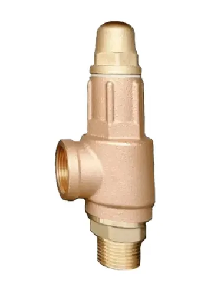
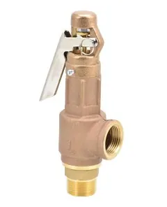
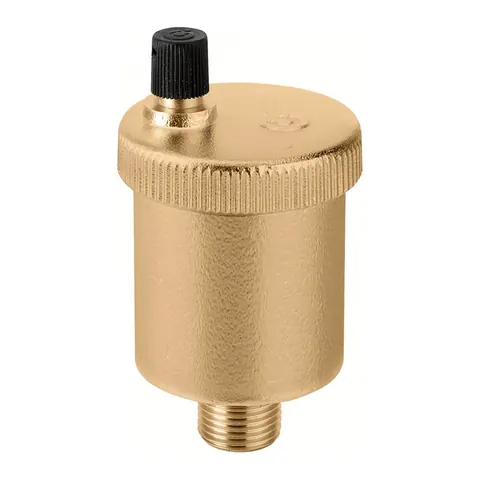
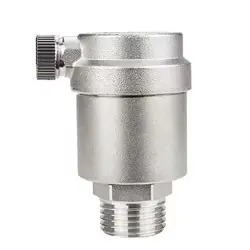

SAFETY VALVE
Valves · 4 products
Bronze pressure-relief valves, 10 and 20 bar, with or without lever, plus brass and S.S air vents. Ask Fakhri Tools for a quote on WhatsApp, by phone or at our trade counter in Al Quoz Industrial Area 3.

SAFETY VALVE

SAFETY VALVE

SAFETY VALVE

SAFETY VALVE
We list bronze safety valves, also called pressure relief valves, with NPT connection from ½" to 2", with or without lever, in 10 bar and 20 bar. You can collect them from our counter in Al Quoz Industrial Area 3.
A safety valve opens to release pressure when a vessel or line goes above its limit, then closes again. Choose the setting to suit the equipment it protects, and never above the pressure that equipment can take. A lever lets you lift the valve by hand to check that it moves and reseats.
Brass and S.S (SS304 or SS316) air vents, 10 bar with NPT thread, in ½", ¾" and 1", are on the same page. They let trapped air out of high points in water lines.
For a quote, WhatsApp the size, 10 or 20 bar, with or without lever, and the quantity.
Buyers use both names for the same job: a valve that opens to let out excess pressure. Ours are bronze, in 10 bar and 20 bar versions.
Our bronze safety valves are listed from ½" to 2" with NPT connection. Send your size on WhatsApp and we confirm.
A lever lets you lift and test the valve by hand, which is common on boilers and air receivers. If you do not need to test it in place, the version without lever is fine.
Send a photo of it, or its nameplate, on WhatsApp and we will tell you if we have it.